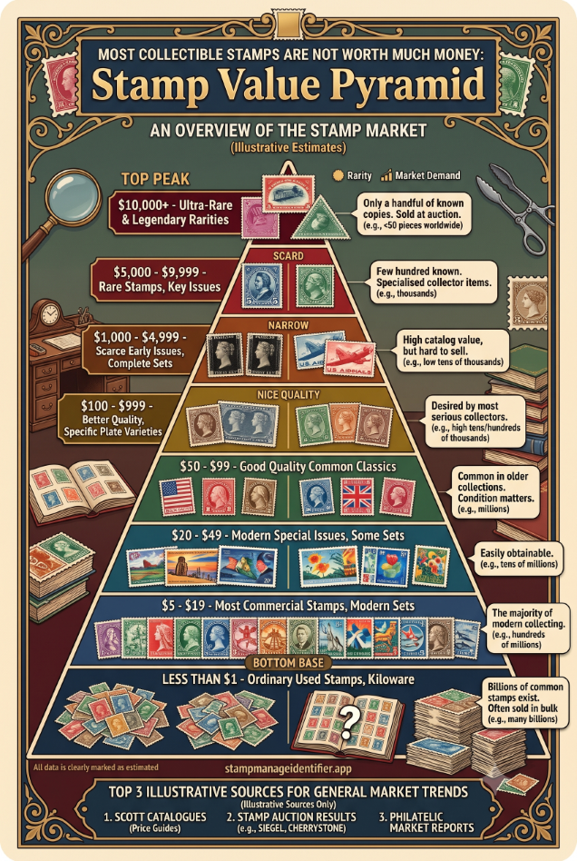
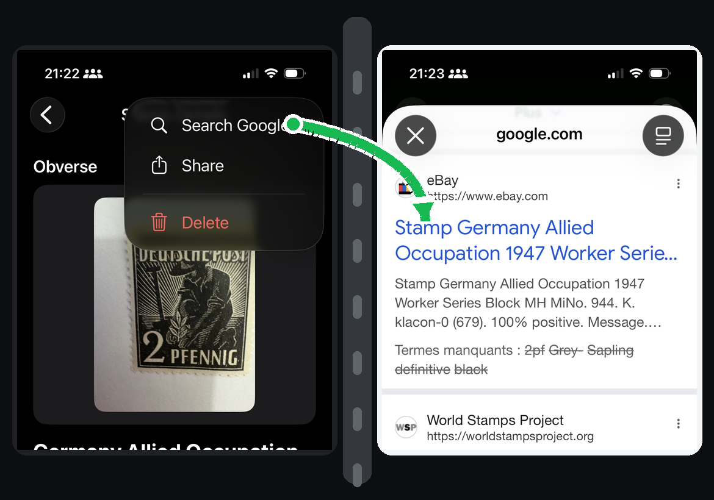

StampManage Identifier can help you record estimated value ranges and the stamp details that affect pricing. Use those estimates as research guidance, especially for inherited collections or mixed lots, and seek expert appraisal for potentially rare or high-value stamps.

What affects stamp value?
- Correct issue, country, year, and denomination.
- Mint or used condition, centering, gum, perforations, and faults.
- Rarity, production variety, errors, and historical demand.
- Comparable recent sales and collector interest.
Search Google for market context
After identifying a stamp, use Google to look for more information about the issue, including active listings, dealer pages, catalog references, and recent selling prices. Search with the strongest details from the stamp record, such as country, year, denomination, topic, color, and issue name. Adding words like sold, eBay, auction, or price can help you find comparable listings and understand what similar stamps are currently selling for.

How to use the app
Scan or search the stamp, review the details page, save the estimated value range and rarity notes, then keep your collection totals current as you catalog more items.